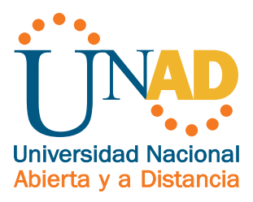

Fase 3: Construccion: Crear un OVI en formato WEB con HTML5 Y CSS3
Objetivo General
Desarrollar sitios web en formato HTML5 y CSS3 para ser visualizados en diferentes navegadores
Objetivos especificos
Conocer más acerca de GIT y GITHUB
Aplicar estilos CSS
Hacer una creación propia de una pagína web mediante GIT y GITHUB
|
 |